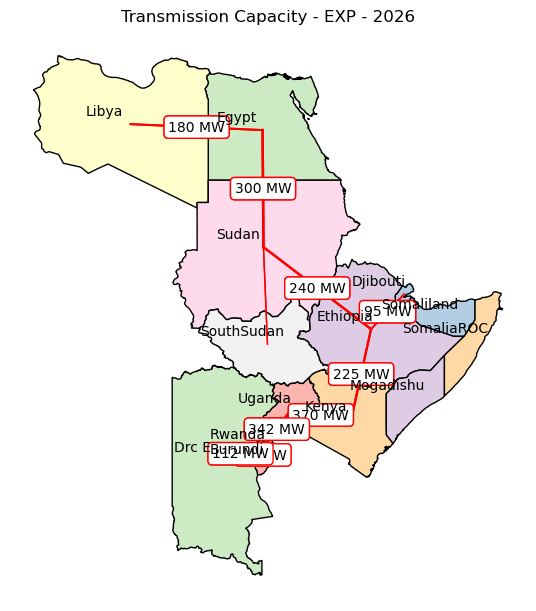

EAPP Postprocessing#
Disclaimer: notebook in progress, only to illustrate new graphs with regional model !
Options#
from utils import *
## Options
# Folder
RESULTS_FOLDER = 'simulations_run_20250317_190351' # Name of the folder containing the results
DISPLAY = True # Usually set to False to avoid displaying the graphs
# Scenarios
SCENARIOS_RENAME = {
'baseline': 'BAU',
'expansion': 'EXP',
}
selected_scenario = 'baseline'
scenario_order = ['baseline', 'expansion']
# Map file
EPM_TO_GEOJSON = {
'South Africa': 'South_Africa',
'Namibia': 'Namibia',
'Mozambique': 'Mozambique',
'United Republic of Tanzania': 'Tanzania',
'Angola': 'Angola',
'Botswana': 'Botswana',
'Zambia': 'Zambia',
'Malawi': 'Malawi',
'Lesotho': 'Lesotho',
'Zimbabwe': 'Zimbabwe',
'Democratic Republic of the Congo': 'DRC',
}
# Option values
DISCOUNT_RATE = 0.06
SELECT_XAXIS = [2026] # x-axis displayed range for the graphs
# Plot specifications
dict_specs = read_plot_specs()
# Create the folder path
RESULTS_FOLDER = os.path.join('..', 'output', RESULTS_FOLDER)
GRAPHS_RESULTS = 'img'
GRAPHS_RESULTS = os.path.join(RESULTS_FOLDER, GRAPHS_RESULTS)
if not os.path.exists(GRAPHS_RESULTS):
os.makedirs(GRAPHS_RESULTS)
print(f'Created folder {GRAPHS_RESULTS}')
print(f"Result folder: {RESULTS_FOLDER}")
Result folder: ..\output\simulations_run_20250317_190351
Read data#
# Extract and process EPM inputs
epm_input = extract_epm_folder(RESULTS_FOLDER, file='input.gdx')
epm_input = process_epm_inputs(epm_input, dict_specs, scenarios_rename=SCENARIOS_RENAME)
mapping_gen_fuel = epm_input['pGenDataExcel'].loc[:, ['scenario', 'generator', 'fuel']]
# Extract and process EPM results
epm_results = extract_epm_folder(RESULTS_FOLDER, file='epmresults.gdx')
epm_results = process_epm_results(epm_results, dict_specs, scenarios_rename=SCENARIOS_RENAME,
mapping_gen_fuel=mapping_gen_fuel)
# Add plant colors to the dictionary
if True:
temp = epm_results['pEnergyByPlant'].copy()
plant_fuel_pairs = temp[['generator', 'fuel']].drop_duplicates()
plant_fuel_pairs['colors'] = plant_fuel_pairs['fuel'].map(dict_specs['colors'])
plant_to_color = dict(zip(plant_fuel_pairs['generator'], plant_fuel_pairs['colors']))
dict_specs['colors'].update(plant_to_color)
InterchangeExt not in epm_results.keys().
InterconUtilization not in epm_results.keys().
pCurtailedVRET not in epm_results.keys().
pNPVByYear not in epm_results.keys().
pInterconUtilizationExt not in epm_results.keys().
pPlantFuelDispatch not in epm_results.keys().
interchanges not in epm_results.keys().
InterconUtilizationExt not in epm_results.keys().
Interchange not in epm_results.keys().
pCurtailedStoHY not in epm_results.keys().
AdditiononalCapacity_trans not in epm_results.keys().
pFuelDispatch not in epm_results.keys().
pHourlyFlow not in epm_results.keys().
pInterchangeExt not in epm_results.keys().
annual_line_capa not in epm_results.keys().
pFuelDispatch not found in epm_dict
pPlantFuelDispatch not found in epm_dict
Plotting figures#
Mix
## Generation mix
scenario = 'EXP'
zone='Ethiopia'
df = epm_results['pEnergyByFuel'].copy()
for zone in list(df['zone'].unique()):
df_zone = df.loc[(df['zone'] == zone)&(df['scenario'] == 'EXP')]
filename = RESULTS_FOLDER+'/img/'+f'generation_mix_{scenario}_{zone}'
stacked_area_plot(df_zone, x_column="year", y_column="value", stack_column="fuel",
dict_colors=dict_specs['colors'], title=f'Generation mix - {scenario} - {zone}',
filename=filename)
print(f'{zone} mix graph saved in {filename}')
Burundi mix graph saved in ..\output\simulations_run_20250317_190351/img/generation_mix_EXP_Burundi
Djibouti mix graph saved in ..\output\simulations_run_20250317_190351/img/generation_mix_EXP_Djibouti
Drc_E mix graph saved in ..\output\simulations_run_20250317_190351/img/generation_mix_EXP_Drc_E
Egypt mix graph saved in ..\output\simulations_run_20250317_190351/img/generation_mix_EXP_Egypt
Ethiopia mix graph saved in ..\output\simulations_run_20250317_190351/img/generation_mix_EXP_Ethiopia
Kenya mix graph saved in ..\output\simulations_run_20250317_190351/img/generation_mix_EXP_Kenya
Libya mix graph saved in ..\output\simulations_run_20250317_190351/img/generation_mix_EXP_Libya
Mogadishu mix graph saved in ..\output\simulations_run_20250317_190351/img/generation_mix_EXP_Mogadishu
Rwanda mix graph saved in ..\output\simulations_run_20250317_190351/img/generation_mix_EXP_Rwanda
SomaliaROC mix graph saved in ..\output\simulations_run_20250317_190351/img/generation_mix_EXP_SomaliaROC
Somaliland mix graph saved in ..\output\simulations_run_20250317_190351/img/generation_mix_EXP_Somaliland
SouthSudan mix graph saved in ..\output\simulations_run_20250317_190351/img/generation_mix_EXP_SouthSudan
Sudan mix graph saved in ..\output\simulations_run_20250317_190351/img/generation_mix_EXP_Sudan
Tanzania mix graph saved in ..\output\simulations_run_20250317_190351/img/generation_mix_EXP_Tanzania
Uganda mix graph saved in ..\output\simulations_run_20250317_190351/img/generation_mix_EXP_Uganda
## Get map data
zone_map, geojson_to_epm = get_json_data(epm_results, dict_specs, geo_add='static/eapp_zones_add.geojson')
geojson_to_epm = {row["ADMIN"]: row["ADMIN"] for _, row in zone_map.iterrows()}
geojson_to_epm['South Sudan'] = 'SouthSudan'
zone_map, centers = create_zonemap(zone_map, map_geojson_to_epm=geojson_to_epm)
# Capacity map
df = epm_results['pCapacityByFuel'].copy()
df = df.loc[df.zone.isin(list(geojson_to_epm.values()))]
make_capacity_mix_map(zone_map, df, dict_specs['colors'], centers, year=2026, region='EAPP', scenario='BAU', filename=None,
map_epm_to_geojson=geojson_to_epm, figsize=(8,6), bbox_to_anchor=(0.7, 0.6), loc='center left',
pie_sizing=True, min_size=1.5, max_size=4)
c:\Users\wb590892\Documents\EPM_Models\Rwanda\EPM_local\epm\postprocessing\utils.py:2613: UserWarning: Geometry is in a geographic CRS. Results from 'area' are likely incorrect. Use 'GeoSeries.to_crs()' to re-project geometries to a projected CRS before this operation.
region_sizes['area'] = region_sizes.geometry.area
# Transmission lines
df = epm_results['pAnnualTransmissionCapacity'].copy()
make_interconnection_map(zone_map, df, centers, year=2026, scenario='EXP', label_yoffset=0.01, label_xoffset=-0.05,
label_fontsize=10, show_labels=True, min_display_capacity=20, figsize=(8, 6))

## Interactive map
# Preprocess transmission data
capa_transmission = epm_results['pAnnualTransmissionCapacity'].copy()
utilization_transmission = epm_results['pInterconUtilization'].copy()
transmission_data = capa_transmission.rename(columns={'value': 'capacity'}).merge(utilization_transmission.rename(columns={'value': 'utilization'}),
on=['scenario', 'zone', 'z2', 'year'])
transmission_data = transmission_data.rename(columns={'zone': 'zone_from', 'z2': 'zone_to'})
energy_data = epm_results['pDemandSupply'].copy()
pCapacityByFuel = epm_results['pCapacityByFuel'].copy()
pEnergyByFuel = epm_results['pEnergyByFuel'].copy()
pDispatch = epm_results['pDispatch'].copy()
pPlantDispatch = epm_results['pPlantDispatch'].copy()
year = 2030
scenario = 'EXP'
filename = f'{RESULTS_FOLDER}/interactivemap.html'
create_interactive_map(zone_map, centers, transmission_data, energy_data, year, scenario, filename,
dict_specs, pCapacityByFuel, pEnergyByFuel, pDispatch, pPlantDispatch)
c:\Users\wb590892\Documents\EPM_Models\Rwanda\EPM_local\epm\postprocessing\utils.py:3124: FutureWarning: The default value of observed=False is deprecated and will change to observed=True in a future version of pandas. Specify observed=False to silence this warning and retain the current behavior
pFuelDispatch_pivot = pFuelDispatch_zone.pivot_table(index=['season', 'day', 't'],
c:\Users\wb590892\Documents\EPM_Models\Rwanda\EPM_local\epm\postprocessing\utils.py:3133: FutureWarning: The default value of observed=False is deprecated and will change to observed=True in a future version of pandas. Specify observed=False to silence this warning and retain the current behavior
pDemand_pivot = pDemand_zone.pivot_table(index=['season', 'day', 't'], values='value')
c:\Users\wb590892\Documents\EPM_Models\Rwanda\EPM_local\epm\postprocessing\utils.py:3124: FutureWarning: The default value of observed=False is deprecated and will change to observed=True in a future version of pandas. Specify observed=False to silence this warning and retain the current behavior
pFuelDispatch_pivot = pFuelDispatch_zone.pivot_table(index=['season', 'day', 't'],
c:\Users\wb590892\Documents\EPM_Models\Rwanda\EPM_local\epm\postprocessing\utils.py:3133: FutureWarning: The default value of observed=False is deprecated and will change to observed=True in a future version of pandas. Specify observed=False to silence this warning and retain the current behavior
pDemand_pivot = pDemand_zone.pivot_table(index=['season', 'day', 't'], values='value')
c:\Users\wb590892\Documents\EPM_Models\Rwanda\EPM_local\epm\postprocessing\utils.py:3124: FutureWarning: The default value of observed=False is deprecated and will change to observed=True in a future version of pandas. Specify observed=False to silence this warning and retain the current behavior
pFuelDispatch_pivot = pFuelDispatch_zone.pivot_table(index=['season', 'day', 't'],
c:\Users\wb590892\Documents\EPM_Models\Rwanda\EPM_local\epm\postprocessing\utils.py:3133: FutureWarning: The default value of observed=False is deprecated and will change to observed=True in a future version of pandas. Specify observed=False to silence this warning and retain the current behavior
pDemand_pivot = pDemand_zone.pivot_table(index=['season', 'day', 't'], values='value')
c:\Users\wb590892\Documents\EPM_Models\Rwanda\EPM_local\epm\postprocessing\utils.py:3124: FutureWarning: The default value of observed=False is deprecated and will change to observed=True in a future version of pandas. Specify observed=False to silence this warning and retain the current behavior
pFuelDispatch_pivot = pFuelDispatch_zone.pivot_table(index=['season', 'day', 't'],
c:\Users\wb590892\Documents\EPM_Models\Rwanda\EPM_local\epm\postprocessing\utils.py:3133: FutureWarning: The default value of observed=False is deprecated and will change to observed=True in a future version of pandas. Specify observed=False to silence this warning and retain the current behavior
pDemand_pivot = pDemand_zone.pivot_table(index=['season', 'day', 't'], values='value')
c:\Users\wb590892\Documents\EPM_Models\Rwanda\EPM_local\epm\postprocessing\utils.py:3124: FutureWarning: The default value of observed=False is deprecated and will change to observed=True in a future version of pandas. Specify observed=False to silence this warning and retain the current behavior
pFuelDispatch_pivot = pFuelDispatch_zone.pivot_table(index=['season', 'day', 't'],
c:\Users\wb590892\Documents\EPM_Models\Rwanda\EPM_local\epm\postprocessing\utils.py:3133: FutureWarning: The default value of observed=False is deprecated and will change to observed=True in a future version of pandas. Specify observed=False to silence this warning and retain the current behavior
pDemand_pivot = pDemand_zone.pivot_table(index=['season', 'day', 't'], values='value')
c:\Users\wb590892\Documents\EPM_Models\Rwanda\EPM_local\epm\postprocessing\utils.py:3124: FutureWarning: The default value of observed=False is deprecated and will change to observed=True in a future version of pandas. Specify observed=False to silence this warning and retain the current behavior
pFuelDispatch_pivot = pFuelDispatch_zone.pivot_table(index=['season', 'day', 't'],
c:\Users\wb590892\Documents\EPM_Models\Rwanda\EPM_local\epm\postprocessing\utils.py:3133: FutureWarning: The default value of observed=False is deprecated and will change to observed=True in a future version of pandas. Specify observed=False to silence this warning and retain the current behavior
pDemand_pivot = pDemand_zone.pivot_table(index=['season', 'day', 't'], values='value')
c:\Users\wb590892\Documents\EPM_Models\Rwanda\EPM_local\epm\postprocessing\utils.py:3124: FutureWarning: The default value of observed=False is deprecated and will change to observed=True in a future version of pandas. Specify observed=False to silence this warning and retain the current behavior
pFuelDispatch_pivot = pFuelDispatch_zone.pivot_table(index=['season', 'day', 't'],
c:\Users\wb590892\Documents\EPM_Models\Rwanda\EPM_local\epm\postprocessing\utils.py:3133: FutureWarning: The default value of observed=False is deprecated and will change to observed=True in a future version of pandas. Specify observed=False to silence this warning and retain the current behavior
pDemand_pivot = pDemand_zone.pivot_table(index=['season', 'day', 't'], values='value')
c:\Users\wb590892\Documents\EPM_Models\Rwanda\EPM_local\epm\postprocessing\utils.py:3124: FutureWarning: The default value of observed=False is deprecated and will change to observed=True in a future version of pandas. Specify observed=False to silence this warning and retain the current behavior
pFuelDispatch_pivot = pFuelDispatch_zone.pivot_table(index=['season', 'day', 't'],
c:\Users\wb590892\Documents\EPM_Models\Rwanda\EPM_local\epm\postprocessing\utils.py:3133: FutureWarning: The default value of observed=False is deprecated and will change to observed=True in a future version of pandas. Specify observed=False to silence this warning and retain the current behavior
pDemand_pivot = pDemand_zone.pivot_table(index=['season', 'day', 't'], values='value')
c:\Users\wb590892\Documents\EPM_Models\Rwanda\EPM_local\epm\postprocessing\utils.py:3124: FutureWarning: The default value of observed=False is deprecated and will change to observed=True in a future version of pandas. Specify observed=False to silence this warning and retain the current behavior
pFuelDispatch_pivot = pFuelDispatch_zone.pivot_table(index=['season', 'day', 't'],
c:\Users\wb590892\Documents\EPM_Models\Rwanda\EPM_local\epm\postprocessing\utils.py:3133: FutureWarning: The default value of observed=False is deprecated and will change to observed=True in a future version of pandas. Specify observed=False to silence this warning and retain the current behavior
pDemand_pivot = pDemand_zone.pivot_table(index=['season', 'day', 't'], values='value')
c:\Users\wb590892\Documents\EPM_Models\Rwanda\EPM_local\epm\postprocessing\utils.py:3124: FutureWarning: The default value of observed=False is deprecated and will change to observed=True in a future version of pandas. Specify observed=False to silence this warning and retain the current behavior
pFuelDispatch_pivot = pFuelDispatch_zone.pivot_table(index=['season', 'day', 't'],
c:\Users\wb590892\Documents\EPM_Models\Rwanda\EPM_local\epm\postprocessing\utils.py:3133: FutureWarning: The default value of observed=False is deprecated and will change to observed=True in a future version of pandas. Specify observed=False to silence this warning and retain the current behavior
pDemand_pivot = pDemand_zone.pivot_table(index=['season', 'day', 't'], values='value')
c:\Users\wb590892\Documents\EPM_Models\Rwanda\EPM_local\epm\postprocessing\utils.py:3124: FutureWarning: The default value of observed=False is deprecated and will change to observed=True in a future version of pandas. Specify observed=False to silence this warning and retain the current behavior
pFuelDispatch_pivot = pFuelDispatch_zone.pivot_table(index=['season', 'day', 't'],
c:\Users\wb590892\Documents\EPM_Models\Rwanda\EPM_local\epm\postprocessing\utils.py:3133: FutureWarning: The default value of observed=False is deprecated and will change to observed=True in a future version of pandas. Specify observed=False to silence this warning and retain the current behavior
pDemand_pivot = pDemand_zone.pivot_table(index=['season', 'day', 't'], values='value')
c:\Users\wb590892\Documents\EPM_Models\Rwanda\EPM_local\epm\postprocessing\utils.py:3124: FutureWarning: The default value of observed=False is deprecated and will change to observed=True in a future version of pandas. Specify observed=False to silence this warning and retain the current behavior
pFuelDispatch_pivot = pFuelDispatch_zone.pivot_table(index=['season', 'day', 't'],
c:\Users\wb590892\Documents\EPM_Models\Rwanda\EPM_local\epm\postprocessing\utils.py:3133: FutureWarning: The default value of observed=False is deprecated and will change to observed=True in a future version of pandas. Specify observed=False to silence this warning and retain the current behavior
pDemand_pivot = pDemand_zone.pivot_table(index=['season', 'day', 't'], values='value')
c:\Users\wb590892\Documents\EPM_Models\Rwanda\EPM_local\epm\postprocessing\utils.py:3124: FutureWarning: The default value of observed=False is deprecated and will change to observed=True in a future version of pandas. Specify observed=False to silence this warning and retain the current behavior
pFuelDispatch_pivot = pFuelDispatch_zone.pivot_table(index=['season', 'day', 't'],
c:\Users\wb590892\Documents\EPM_Models\Rwanda\EPM_local\epm\postprocessing\utils.py:3133: FutureWarning: The default value of observed=False is deprecated and will change to observed=True in a future version of pandas. Specify observed=False to silence this warning and retain the current behavior
pDemand_pivot = pDemand_zone.pivot_table(index=['season', 'day', 't'], values='value')
c:\Users\wb590892\Documents\EPM_Models\Rwanda\EPM_local\epm\postprocessing\utils.py:3124: FutureWarning: The default value of observed=False is deprecated and will change to observed=True in a future version of pandas. Specify observed=False to silence this warning and retain the current behavior
pFuelDispatch_pivot = pFuelDispatch_zone.pivot_table(index=['season', 'day', 't'],
c:\Users\wb590892\Documents\EPM_Models\Rwanda\EPM_local\epm\postprocessing\utils.py:3133: FutureWarning: The default value of observed=False is deprecated and will change to observed=True in a future version of pandas. Specify observed=False to silence this warning and retain the current behavior
pDemand_pivot = pDemand_zone.pivot_table(index=['season', 'day', 't'], values='value')
Interactive map saved to ..\output\simulations_run_20250317_190351/interactivemap.html